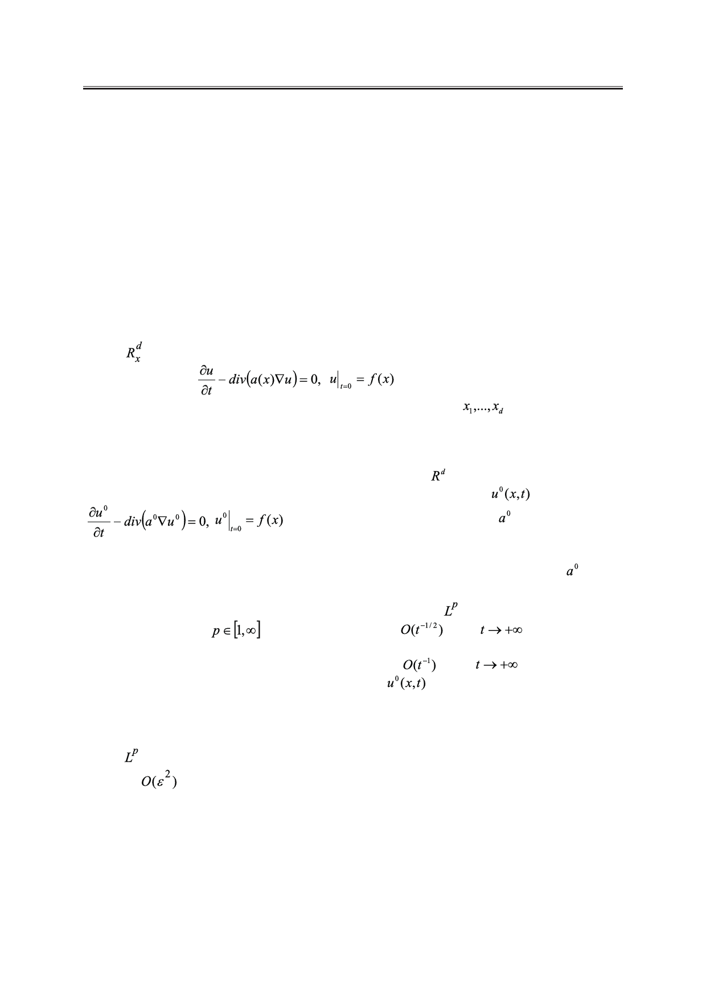

МАТЕМАТИЧЕСКОЕ МОДЕЛИРОВАНИЕ
УДК 517.956.8
АСИМПТОТИКА РЕШЕНИЯ УРАВНЕНИЯ ДИФФУЗИИ
В ПЕРИОДИЧЕСКОЙ СРЕДЕ НА БОЛЬШИХ ВРЕМЕНАХ
И ЕЕ ПРИМЕНЕНИЕ К ОЦЕНКАМ УСРЕДНЕНИЯ
С.Е. Пастухова@,
О.А. Евсеева
Московский технологический университет, Москва 119454, Россия
@Автор для переписки, e-mail: pas-se@yandex.ru
В рассматривается задача Коши для линейного параболического уравнения
второго порядка:
. Матрица коэффициентов a(x) изме-
рима, симметрична и 1-периодична по каждой переменной
. Задача моделиру-
ет диффузию в неоднородной среде, имеющей периодическую структуру. Решение u(x, t)
можно интерпретировать, например, как плотность распределения некоторой случайной
величины в момент времени t и тогда подразумевается, что начальное распределение f(x)
– неотрицательная функция, интеграл от которой по равен 1. Известно, что при
большом значении времени t решение u(x,t) близко к решению
задачи Коши:
с постоянной матрицей диффузии . Иными словами,
при больших t диффузия в периодической среде описывается эффективно через диффу-
зию в однородной среде, которой соответствует постоянная матрица диффузии , назы-
ваемая матрицей эффективной диффузии. Недавно была доказана оценка погрешности
приближения функции u(x,t) решением в норме лебегова -пространства по сечению
t=const для любого
. Эта оценка порядка
при
и имеет опера-
торный тип. В настоящей работе найдено приближение для решения исходной задачи
с оценкой погрешности того же типа, но порядка
при
. Это приближе-
ние оказывается суммой нулевого приближения
и некоторого корректора. Обо-
снование проведено при дополнительном условии липшицевости матрицы диффузии
a(x). Описанный выше результат используется для построения аппроксимации решения
уравнения диффузии с быстро осциллирующими ε-периодическими коэффициентами в
норме – пространства на сечении t = 1. Погрешность аппроксимации имеет оценку
порядка
при ε → 0. Результаты работы можно использовать в разных областях,
например, при расчете теплового потока в композиционной среде с мелкоячеистой пе-
риодической структурой или расчете плотности популяции бактерий в периодической
питательной среде.
Ключевые слова: уравнение диффузии, эффективная диффузия, усредненный опе-
ратор, фундаментальное решение, задачи на ячейке, асимптотика на больших временах,
оценка усреднения в лебеговых нормах.
60
Российский технологический журнал 2017 Том 5 № 5